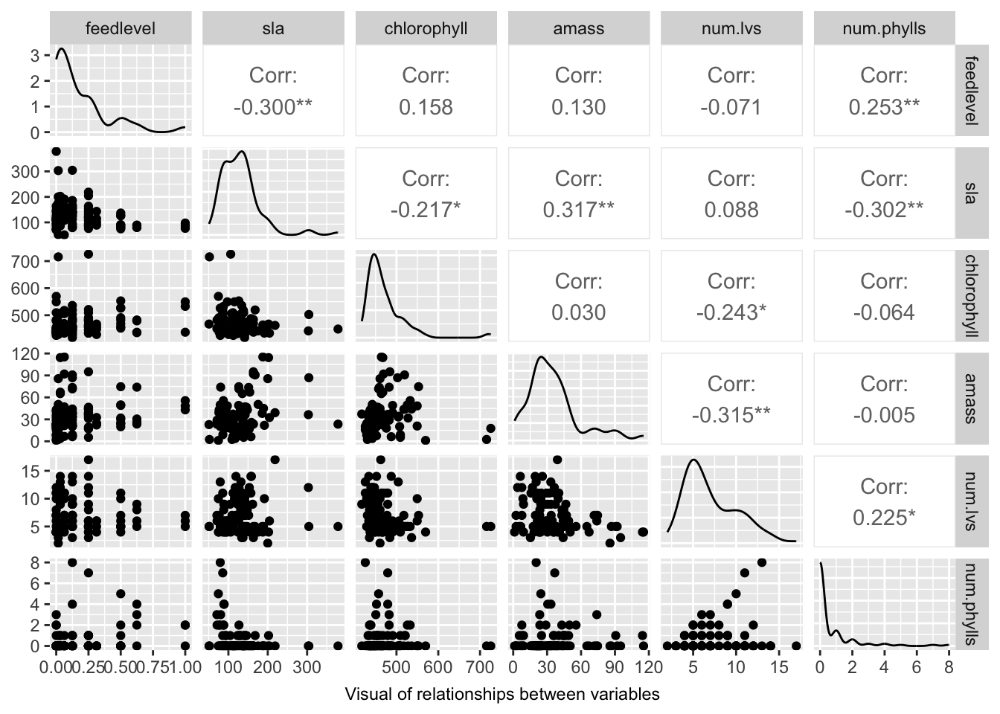
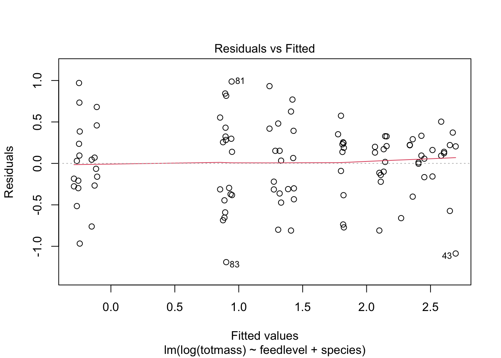

Code
library(tidyverse)
library(here)
library(ggeffects)
library(performance)
library(naniar)
library(flextable)
library(car)
library(broom)
library(corrplot)
library(AICcmodavg)
library(GGally)
library(MuMIn)Link to github repo: https://github.com/mary-cadogan/ENVS-193DS_homework-5
Sarracenia is a genus of carnivorous pitcher plants that receives their nutrients from captured prey and atmospheric depostition (Wakefield et al., 2005). They are a good subject for the study of ecological stoichemetry (energy) and nutrient limitation because they provide insight into the processes that control patterns of species distributions, abundances, and population dynamics due to their unique methods of obtaining nutrients (such as nitrogen and phosphorus) (Wakefield et al., 2005). They are highly sensitive to N:P ratios so they respond differently to inputs of prey and atmospheric deposition (Wakefield et al., 2005). Plant biomass mainly consists of cellulose, lignin, hemicellulose, pectin, extractives, and inorganic components (Yang and Lu, 2021). Determining what influences the production of these factors is important for assessing the inputs that pitcher plants need to grow. This study aims to test how different Sarracenia characteristics predict biomass and will be primarily looking at chlorophyll content, feed level, and amass (photosynthetic rate). Most plants accumulate biomass via photosynthesis (Zhu et al., 2008), however Sarracenia plants are rare in the way they also get energy from insects. The null hypothesis is that these factors do not influence Sarracenia biomass and the alternative hypothesis is that at least one of the factors does influence biomass.
Two plants of each Sarracenia species (S. alabamensis, S. alata, S. flava, S. jonesii, S. leucophylla, S. minor, S. psittacina, S. purpurea, S. rosea, and S. rubra) were assigned to one of six feeding levels and were fed once a week for 7 weeks. 120 total plants were tested and aboveground size and Amass were measured prior to treatments.
library(tidyverse)
library(here)
library(ggeffects)
library(performance)
library(naniar)
library(flextable)
library(car)
library(broom)
library(corrplot)
library(AICcmodavg)
library(GGally)
library(MuMIn)#load in data
plant <- read_csv(here("knb-lter-hfr", "hf109-01-sarracenia.csv")) %>%
#selecting for columns of interest
select(totmass, species, feedlevel, sla,chlorophyll, amass, num.lvs, num.phylls)
#drop the NAs
plant_subset <- plant %>%
drop_na(sla, chlorophyll, amass, num.lvs, num.phylls, feedlevel)Raw data was first cleaned and then organized by selecting for the variables we are testing: total mass (g), species type, amount (grams) of ground hymenoptera being fed per week (feed level), specific Leaf Area (cm2/g of the youngest fully-extended leaf), chorophyll content of youngest fully-expanded leaf (mg/g), amass: mass-based light-saturated photosynthetic rate of youngest leaf (nmol CO2 x g-1 x s-1), total number of pitchers and phyllodes produced by each plant, and number of phyllodes produced by each plant. This created a subset of data that we analyzed that also got rid of the missing variables.
#determine what variables are missing from the data using gg_miss_var
gg_miss_var(plant) +
#create and center caption
labs(caption = "Number of missing variables in Sarracenia dataset") +
theme(plot.caption = element_text(hjust = 0.5))Chlorophyll and Amass are missing 14 observations, specific Leaf Area is missing 10, and total of number of pitches and phyllodes and number of phyllodes are missing 2. Total mass, species, and feed level are not missing anydata. The missing data will impact the data analysis, so were removed in the subset.
#create plant correlation object that selects the variables from plant_subset. The pearson method to determine relationship between numerical values.
plant_cor <- plant_subset %>%
select(feedlevel:num.phylls) %>%
cor(method = "pearson")
# Create the correlation plot
corrplot(plant_cor,
method = "ellipse",
addCoef.col = "black") #add caption
labs(caption = "Pearson's correlation between variables with -1 indicating a total negative correlation and +1 indicating a total positive correlation")$caption
[1] "Pearson's correlation between variables with -1 indicating a total negative correlation and +1 indicating a total positive correlation"
attr(,"class")
[1] "labels"The Pearson’s correlation table shows a generally weak correlation between all the variables with the the highest correlations being between amass and sla (0.32), sla and feedlevel (-0.3), sla and num.phylls (-0.3), and amass and num.lvs (-0.31). The results indicate that sla has slight correlations with more of the variables compared to the others.
#use ggpairs to show how all the variables from plant_subset relate to one another
plant_subset %>%
select(feedlevel:num.phylls) %>%
ggpairs() +
labs(caption = "Visual of relationships between variables") +
theme(plot.caption = element_text(hjust = 0.5))
The visualization shows that some variables may be related, including sla and feedlevel, sla and chlorophyll, num.phylls and feedlevel, num.phylls and sla, num.lvs and amass, amass and sla, num.lvs and chlorophyll, and num.phylls and num.lvs. The predictor variables may then be also related to each other, so collinearity is going to need to be tested.
#use linear model test to create a null model and full model. The full model includes all of the predictor variables.
null <- lm(totmass ~ 1, data = plant_subset)
full <- lm(totmass ~ species + feedlevel + sla + chlorophyll + amass + num.lvs + num.phylls, data = plant_subset)
null
Call:
lm(formula = totmass ~ 1, data = plant_subset)
Coefficients:
(Intercept)
6.022 full
Call:
lm(formula = totmass ~ species + feedlevel + sla + chlorophyll +
amass + num.lvs + num.phylls, data = plant_subset)
Coefficients:
(Intercept) speciesalata speciesflava speciesjonesii
-3.9556483 5.7430563 7.8471637 0.8654317
speciesleucophylla speciesminor speciespsittacina speciespurpurea
12.6365468 1.7674245 -4.1933985 -0.4017356
speciesrosea speciesrubra feedlevel sla
-0.3930562 4.0927812 -2.0816474 -0.0094688
chlorophyll amass num.lvs num.phylls
0.0111793 0.0001326 0.4668255 -0.0023333 The null model only includes a constant (totmass ~ 1) and assumes totmass has no predictor variables. The null model is used as a comparison for the full model, which identifies the variables as potential predictors for totmass.
#visually assess normality and homoskedasticity of residuals using diangostic plots for the full model:
par(mfrow = c(2, 2))
plot(full)
#run Shapiro-Wilk test
check_normality(full)Warning: Non-normality of residuals detected (p < .001).#run Breusch-Pagan test
check_heteroscedasticity(full)Warning: Heteroscedasticity (non-constant error variance) detected (p < .001).Using diagnostic tests and statistical assumptions the normality and homoscedastic assumptions appear to be violated because the data points are not evenly distributed around the horizontal line. There are also a few identified outliers in the Normal QQ-Plot that change the shape of the data. Therefore, corrections will need to be made in order to run the multilinear regression.
#log the null and full models
null_log <- lm(log(totmass) ~ 1, data =plant_subset)
full_log <- lm(log(totmass) ~ species + feedlevel + sla + chlorophyll + amass + num.lvs + num.phylls, data = plant_subset)
#check normality and homoscedasticity visually an using Shapiro-Wilk test and Breusch-Pagan test
par(mfrow = c(2, 2))
plot(full_log)
check_normality(full_log)OK: residuals appear as normally distributed (p = 0.107).check_heteroscedasticity(full_log)OK: Error variance appears to be homoscedastic (p = 0.071).In order to meet the assumptions, I did a log transformation so that the data is normally distributed and homoscedastic.
i.
#create other linear models using the amas,, chlorophyll, and feedlevel varaiables. Species was added so that assumptions are not violated
model_3_log <- lm(log(totmass) ~ amass + species, data = plant_subset)
model_4_log <- lm(log(totmass) ~ chlorophyll + species, data = plant_subset)
model_5_log <- lm(log(totmass) ~ feedlevel + species, data = plant_subset)I added species to all the the models as a way to correct for non-normality and heteroscedastcity. I chose amass because it is indicator of photosynthetic rate, chlorophyll because it is an indicator of a plant’s photosynthetic capability, and feed level because their food provides the plant energy. These three variables all inputs that may impact plant biomass because plants need energy to grow and I wanted to see the difference between insects and sunlight as energy.
#check normality and homoscedasticity of the new linear models
plot(model_3_log)check_normality(model_3_log)OK: residuals appear as normally distributed (p = 0.343).check_heteroscedasticity(model_3_log)OK: Error variance appears to be homoscedastic (p = 0.101).plot(model_4_log)check_normality(model_4_log)OK: residuals appear as normally distributed (p = 0.134).check_heteroscedasticity(model_4_log)OK: Error variance appears to be homoscedastic (p = 0.327).plot(model_5_log)
check_normality(model_5_log)OK: residuals appear as normally distributed (p = 0.339).check_heteroscedasticity(model_5_log)OK: Error variance appears to be homoscedastic (p = 0.110).j.
#evaluate multicollinearity
car::vif(full_log) GVIF Df GVIF^(1/(2*Df))
species 42.351675 9 1.231351
feedlevel 1.621993 1 1.273575
sla 1.999989 1 1.414210
chlorophyll 1.949828 1 1.396362
amass 2.872084 1 1.694722
num.lvs 2.813855 1 1.677455
num.phylls 2.995510 1 1.730754The only GVIF value above 5 was species but was corrected by the GVIF^(2*Df). Since all other values were below 5, there appear to be no multicollinearity (intercorrelation between predictor variables in regression) issues especially for the predictor variables we are testing.
k.
#compare models using Akaike's Information criterion (AIC) values
AICc(full_log)[1] 133.9424AICc(model_3_log)[1] 160.1386AICc(model_4_log)[1] 146.0276AICc(model_5_log)[1] 159.6218AICc(null_log)[1] 306.0028MuMIn::AICc(full_log, model_3_log, model_4_log, model_5_log, null_log) df AICc
full_log 17 133.9424
model_3_log 12 160.1386
model_4_log 12 146.0276
model_5_log 12 159.6218
null_log 2 306.0028MuMIn::model.sel(full_log, model_3_log, model_4_log, model_5_log, null_log)Model selection table
(Int) ams chl fdl num.lvs num.phy sla spc
full_log -1.3390 0.0023380 0.004368 -0.4743 0.09176 -0.03959 -0.002493 +
model_4_log -1.1180 0.004573 +
model_5_log 0.8996 -0.1814 +
model_3_log 0.8804 0.0001378 +
null_log 1.3500
df logLik AICc delta weight
full_log 17 -46.371 133.9 0.00 0.998
model_4_log 12 -59.280 146.0 12.09 0.002
model_5_log 12 -66.078 159.6 25.68 0.000
model_3_log 12 -66.336 160.1 26.20 0.000
null_log 2 -150.941 306.0 172.06 0.000
Models ranked by AICc(x) The lowest AIC value was the full_log model followed by the model_4_log, then model_5_log, then model_3_log, and then null_log. This means that the full_log would be the best fit model and null_log would be the worst. However, the other 3 models have a lot less predictor variables than the full_log so model_4_log would be the best fit model.
The full_log model had a lower AIC value of 133.9 but is a more complex model, whereas the model_4_log had the lowest AIC of 146 with the least amount of explanatory variables.
#create summary table of the full_log model
summary(model_4_log)
Call:
lm(formula = log(totmass) ~ chlorophyll + species, data = plant_subset)
Residuals:
Min 1Q Median 3Q Max
-0.97701 -0.25477 0.02258 0.29601 0.83328
Coefficients:
Estimate Std. Error t value Pr(>|t|)
(Intercept) -1.117977 0.561588 -1.991 0.049476 *
chlorophyll 0.004573 0.001244 3.676 0.000399 ***
speciesalata 1.137411 0.191874 5.928 5.30e-08 ***
speciesflava 1.406383 0.195849 7.181 1.75e-10 ***
speciesjonesii 0.513815 0.211604 2.428 0.017119 *
speciesleucophylla 1.476106 0.206296 7.155 1.97e-10 ***
speciesminor 0.215951 0.201207 1.073 0.285954
speciespsittacina -1.254828 0.192496 -6.519 3.75e-09 ***
speciespurpurea -0.522777 0.262257 -1.993 0.049183 *
speciesrosea -1.223618 0.219466 -5.575 2.45e-07 ***
speciesrubra 0.851479 0.195194 4.362 3.36e-05 ***
---
Signif. codes: 0 '***' 0.001 '**' 0.01 '*' 0.05 '.' 0.1 ' ' 1
Residual standard error: 0.4552 on 92 degrees of freedom
Multiple R-squared: 0.8313, Adjusted R-squared: 0.813
F-statistic: 45.35 on 10 and 92 DF, p-value: < 2.2e-16table <- tidy(model_4_log, conf.int = TRUE) %>%
#change p value numbers if they are really small
mutate(p.value = case_when(p.value < 0.001 ~ "< 0.001")) %>%
#change the estimates, standard error, and t-statistics to round to __ digits
mutate(statistic = round(statistic, digits = 3)) %>%
mutate(estimate = round(estimate, digits = 3)) %>%
mutate(std.error = round(std.error, digits = 3)) %>%
mutate(conf.low = round(conf.low, digits = 3)) %>%
mutate(conf.high = round(conf.high, digits = 3)) %>%
#using mutate
#make it into a flextable
flextable() %>%
#fit it to the viewer
autofit()
tableterm | estimate | std.error | statistic | p.value | conf.low | conf.high |
|---|---|---|---|---|---|---|
(Intercept) | -1.118 | 0.562 | -1.991 | -2.233 | -0.003 | |
chlorophyll | 0.005 | 0.001 | 3.676 | < 0.001 | 0.002 | 0.007 |
speciesalata | 1.137 | 0.192 | 5.928 | < 0.001 | 0.756 | 1.518 |
speciesflava | 1.406 | 0.196 | 7.181 | < 0.001 | 1.017 | 1.795 |
speciesjonesii | 0.514 | 0.212 | 2.428 | 0.094 | 0.934 | |
speciesleucophylla | 1.476 | 0.206 | 7.155 | < 0.001 | 1.066 | 1.886 |
speciesminor | 0.216 | 0.201 | 1.073 | -0.184 | 0.616 | |
speciespsittacina | -1.255 | 0.192 | -6.519 | < 0.001 | -1.637 | -0.873 |
speciespurpurea | -0.523 | 0.262 | -1.993 | -1.044 | -0.002 | |
speciesrosea | -1.224 | 0.219 | -5.575 | < 0.001 | -1.659 | -0.788 |
speciesrubra | 0.851 | 0.195 | 4.362 | < 0.001 | 0.464 | 1.239 |
The model_4_log model shows how chlorophyll and the following species: salata, flava, leucophylla, spsittacina, rosea, and rubra were statistically significant on biomass with p values less than 0.01. The negative estimates show where negative correlation exists and positive estiamtes show where positive correlation exists. Chlorophyll had a very low estimate but still a significant p value.
#create plot of model_4_log using chlorophyll on x axis and total mass on y axis. use ggpredict() to backtransform estimates
model_pred2 <- ggpredict(model_4_log, terms = "species", back.transform = TRUE)
plot(ggpredict(model_4_log, terms = "chlorophyll", back.transform= TRUE, add.data = T)) +
#edit and clean up the graph
labs(caption = "Data source: Effects of Prey Availability on Sarracenia Physiology at Harvard Forest 2005" , x = "Chlorophyll (mg/g)", y = "Biomass (g)", title = "Chlorophyll Content as a Predictor of Sarracenia Biomass") +
theme_classic() +
theme(plot.caption = element_text(hjust = 0.5),
plot.title = element_text(hjust = 0.5))model_pred2# Predicted values of totmass
species | Predicted | 95% CI
---------------------------------------
alabamensis | 2.82 | [2.12, 3.75]
alata | 8.80 | [6.77, 11.44]
flava | 11.51 | [8.75, 15.15]
jonesii | 4.72 | [3.40, 6.54]
minor | 3.50 | [2.66, 4.60]
psittacina | 0.80 | [0.62, 1.05]
purpurea | 1.67 | [1.13, 2.47]
rubra | 6.61 | [5.02, 8.71]
Adjusted for:
* chlorophyll = 471.29The results of this model indicate that there is a slight posititve correlation between chlorophyll content and Sarracenia biomass, additionally proven with a p value of less than 0.01. This reveals that although Sarracenia plants receive a large portion of their energy from insects, that chlorophyll concentration (which is used to make food during photosynthesis) is still highly relevant for biomass accumulation. Therefore, these plants would not be able to survive on insects only and must still receive sunlight.
Wakefield, A. E., Gotelli, N. J., Wittman, S. E., & Ellison, A. M. (2005). Prey addition alters nutrient stoichiometry of the carnivorous plant Sarracenia purpurea. Ecology, 86(7), 1737–1743. https://doi.org/10.1890/04-1673
Yang, C., & Lü, X. (2021). Composition of plant biomass and its impact on pretreatment. Advances in 2nd Generation of Bioethanol Production, 71–85. https://doi.org/10.1016/b978-0-12-818862-0.00002-9
Zhu, X.-G., Long, S. P., & Ort, D. R. (2008). What is the maximum efficiency with which photosynthesis can convert solar energy into biomass? Current Opinion in Biotechnology, 19(2), 153–159. https://doi.org/10.1016/j.copbio.2008.02.004